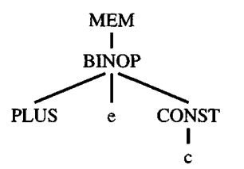

The intermediate representation (Tree) language expresses only one operation in each tree node: memory fetch or store, addition or subtraction, conditional jump, and so on. A real machine instruction can often perform several of these primitive operations. For example, almost any machine can perform an add and a fetch in the same instruction, corresponding to the tree

Finding the appropriate machine instructions to implement a given intermediate representation tree is the job of the instruction selection phase of a compiler.
We can express a machine instruction as a fragment of an IR tree, called a tree pattern. Then instruction selection becomes the task of tiling the tree with a minimal set of tree patterns.
The following is an example about how MIPS instruction is tiled in IR: README
+----------------+--------------+------------------------------+-------------+-----------+ | name | effect |trees | notes |# of nodes | +----------------+--------------+------------------------------+-------------+-----------+ | add $d, $s, $t | $d = $s + $t | + |signed | 1 | | | | / \ |arithmatics | | | | | | | | +----------------+--------------+------------------------------+-------------+-----------+ |sub $d, $s, $t | $d = $s - $t | - |signed | 1 | | | | / \ | | | | | | | | | +----------------+--------------+------------------------------+-------------+-----------+ |mul $d, $s, $t | $d = $s * $t | * |low 32 bits | 1 | | | | / \ |of the res is| | | | | |stored in $d | | |----------------+--------------+------------------------------+-------------+-----------| |sw $t, i($s) |MEM[$s+i] = $t| MOVE MOVE MOVE MOVE |store word (4| 4, 3, 2 | | | | | | | | |bytes) | | | | | / \ / \ / \ / \ | | | | | | MEM MEM MEM MEM | | | | | | | | | | | | | | | | + + i | | | | | | / \ / \ | | | | | | i i | | | +----------------+--------------+------------------------------+-------------+-----------+
The algorithm for optimal tiling is called Maximal Munch. It is quite simple. Starting at the root of the tree, find the largest tile that fits. Cover the root node - and perhaps several other nodes near the root - with this tile, leaving several subtrees. Now repeat the same algorithm for each subtree.
The implementation for MAXIMAL MUNCH is in mipsgen.sml
It will help to produce the assembly code defined in assem.sml
Note that, the current assembly code will still use abstract register (assume inifinite number registers). In the following liveness analysis and register allocation, we will restrict the number of registers.